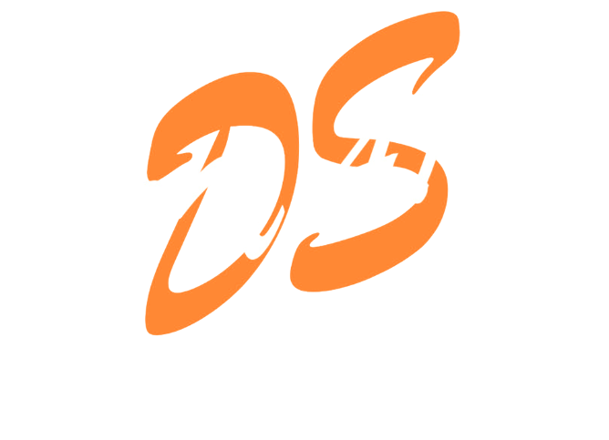

Aos nossos parceirosA DS/MG agradece a cada parceiro e fornecedor que esteve ao nosso lado em 2026. Que as festas sejam de paz e que 2027 traga novos projetos juntos.
Obrigado por levar dignidade a quem trabalha em Minas, todos os dias do ano. Que este Natal seja de descanso, família e paz.
Que o novo ano traga mais valorização da Auditoria-Fiscal do Trabalho, novas conquistas para a categoria e mais trabalho digno em Minas.